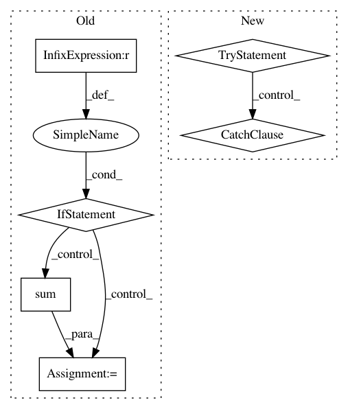

6eaa7e82169f0f017a01acf759f23fce7ad5939b,open_seq2seq/utils/funcs.py,,train,#Any#Any#Any#,16
Before Change
total_time += time.time() - tm
if "bench_mode" in train_model.params:
for i in range(train_model.num_gpus):
if train_model.params["bench_mode"] == "tokens":
// adding source length
total_objects += np.sum(fetches_vals[i + 1]["source_tensors"][-1])
// adding target length
total_objects += np.sum(fetches_vals[i + 1]["target_tensors"][-1])
elif train_model.params["bench_mode"] == "images":
// adding batch size
total_objects += np.sum(
fetches_vals[i + 1]["source_tensors"][0].shape[0]
)
step += 1
if hvd is not None:
deco_print("Finished training on rank {}".format(hvd.rank()))
After Change
local_init_op=tf.group(tf.local_variables_initializer(), init_data_layer)
)
fetches = [train_model.train_op]
try:
total_objects = 0.0
// on horovod num_gpus is 1
for worker_id in range(train_model.num_gpus):
fetches.append(train_model.get_num_objects_per_step(worker_id))
except NotImplementedError:
deco_print("WARNING: Can"t compute number of objects per step, since "
"train model does not define get_num_objects_per_step method.")
// starting training
with tf.train.MonitoredTrainingSession(
scaffold=scaffold,
checkpoint_dir=checkpoint_dir,
save_summaries_steps=train_model.params["save_summaries_steps"],
In pattern: SUPERPATTERN
Frequency: 3
Non-data size: 6
Instances
Project Name: NVIDIA/OpenSeq2Seq
Commit Name: 6eaa7e82169f0f017a01acf759f23fce7ad5939b
Time: 2018-05-29
Author: igor.a.gitman@gmail.com
File Name: open_seq2seq/utils/funcs.py
Class Name:
Method Name: train
Project Name: scikit-multiflow/scikit-multiflow
Commit Name: 55fd43ed5f43e8ffa58acd863174c2c1ed076513
Time: 2018-07-21
Author: jacob.montiel@gmail.com
File Name: src/skmultiflow/meta/oza_bagging.py
Class Name: OzaBagging
Method Name: predict_proba
Project Name: NVIDIA/sentiment-discovery
Commit Name: 81658f79c135ce6e04d89a0055d7090d5efea80e
Time: 2018-08-10
Author: raulp@dbcluster.nvidia.com
File Name: fp16/loss_scaler.py
Class Name: DynamicLossScaler
Method Name: _has_inf_or_nan